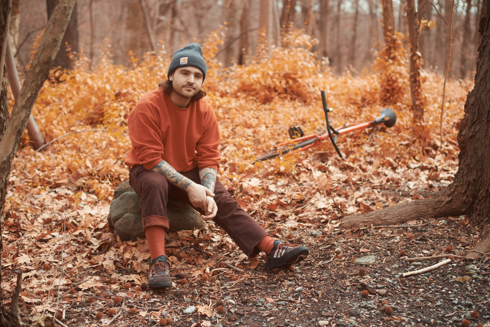

VILDAVA
NYC rhythm and decay vildavamusic[at]gmail.com
photo by max braniganUpcoming Shows
- 11/7/26 - 'Death Content' record release at Future Space, Ridgewood w/ Molto Ohm / Jason Nazary, Dahjyn
Past Shows
- 6/13/26 - Pittsburgh, PA @ The Tub w/ Tyler Jacob Thompson, Lucite Spine, Cloning
- 6/12/26 - Detroit, MI @ Olympus Theatre w/ Dominant Hand, Caitlin C. Harvey
- 6/11/26 - Cincinatti, OH @ Comet w/ Pobrecito, Napalm Trees
- 6/10/26 - Nashville, TN @ Random Sample w/ Joseph Allred, Spellward
- 6/9/26 - Charlotte, NC @ Petras w/ Snoom, Sweat Transfer
- 6/8/26 - Richmond, VA @ Material Room w/ Caleb Flood, IRS
- 6/7/26 - Philadelphia, PA @ 2223 Fish w/ Sohme, Matt O'hare
- 4/26/26 - Ridgewood, NY @ Trans Pecos w/ Corridor, Karol Konstancia, Dahjyn
- 3/5/26 - Poughkeepsie, NY @ Reason and Ruckus w/ Industry Standard, Shane Kerr, Music Lovers Anonymous
- 12/4/25 - Ridgewood, NY @ Bar Freda w/ King Mob
- 12/1/25 - Brooklyn, NY @ Sleepwalk w/ Nat Homer, Armari E
- 11/20/25 - Newburgh, NY @ Untouchable w/ Peretsky, Xol Meissner
- 10/14/25 - Brooklyn, NY @ Hart Bar w/ Murderpact, Dahjyn, Pat Walsh
- 10/3/25 - Philadelphia, PA @ Century w/ Aunt Dracula, Stafford
- 6/30/25 - Catskill, NY @ Avalon w/ Lea Bertucci + Michael Beharie
- 6/29/25 - Portland, ME @ Apohadion w/ Crank Sturgeon + Id M Theftable, RJ Miller Duo
- 6/28/25 - Winooski, VT @ Autumn Records w/ Pete Edwards
- 6/27/25 - Easthampton, MA @ Sulis Studio w/ Bobbie, Enchanted Mirror, Impure Luck
- 6/25/25 Boston, MA @ Pasta Planet w/ Wulfer, Bicentennial Memorial Accordion Choir
- 6/24/25 - Providence, RI @ Getties w/ Daedalus, RUBY
- 6/23/25 - Philadelphia, PA @ Vox Populi w/ Ecology:Homestones, Sam Wenc
- 6/22/25 - Baltimore, MD @ Undercroft w/ Waco Mammoth
- 6/21/25 - Brooklyn, NY @ Littlefield w/ Cassandra Croft, Omar Ahmad
- 4/6/25 - New York, NY @ Nublu w/ Marked for Death